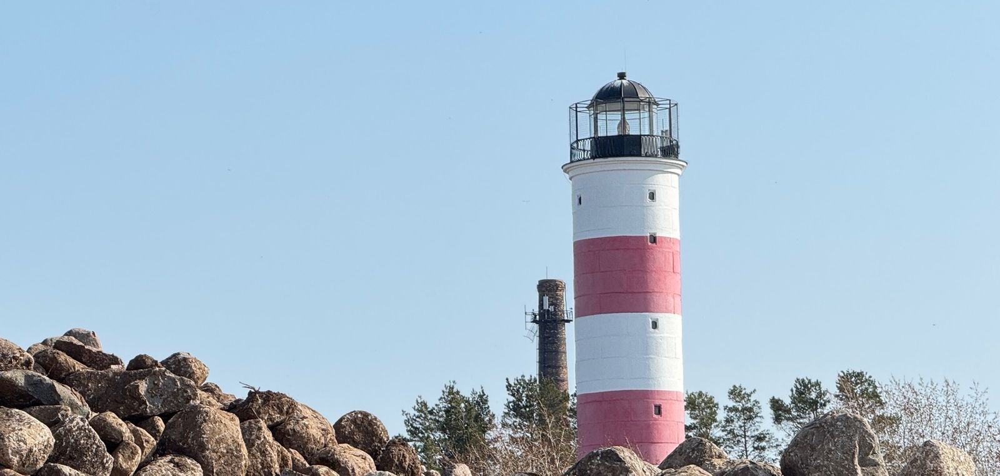

Kõik 55 Transpordiameti nimekirja tuletorni Narva jõe suudmest Ruhnuni ning Peipsi kaldal, pluss viis vana torni omaette. Märgi linnuke torni juurde, kus oled käinud - valik jääb sellesse brauserisse alles.
Kõik nimekirja tornid kaardil. Punane täpp tähendab, et oled seal käinud. Vajuta täpile, et näha, mis torn see on.
Käidud Käimata Avatud külastajatele